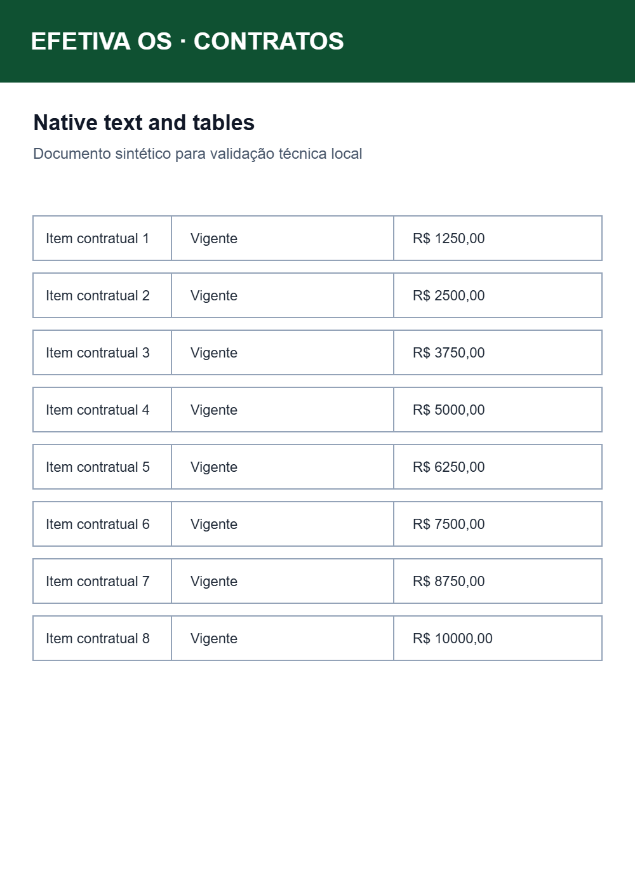
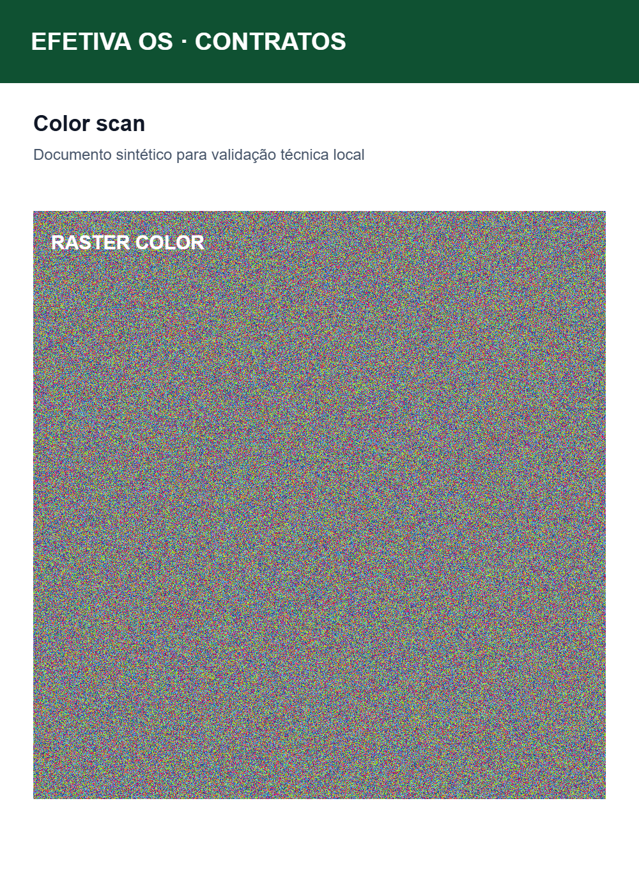
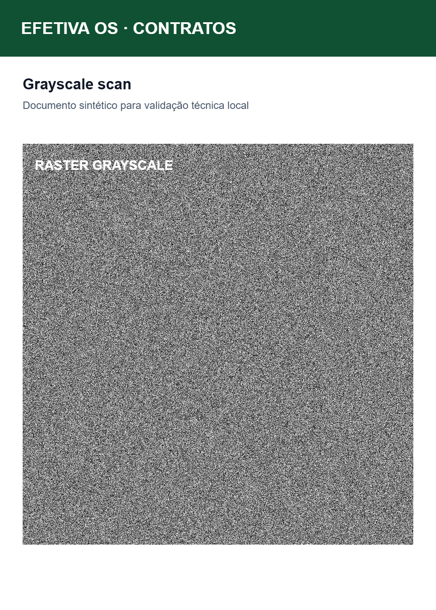
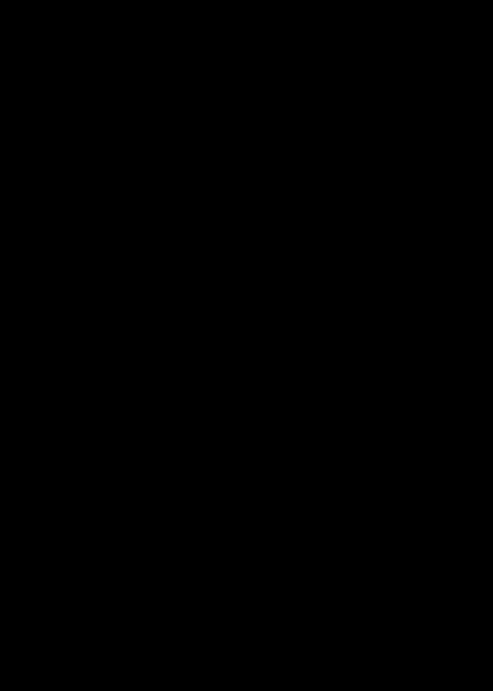
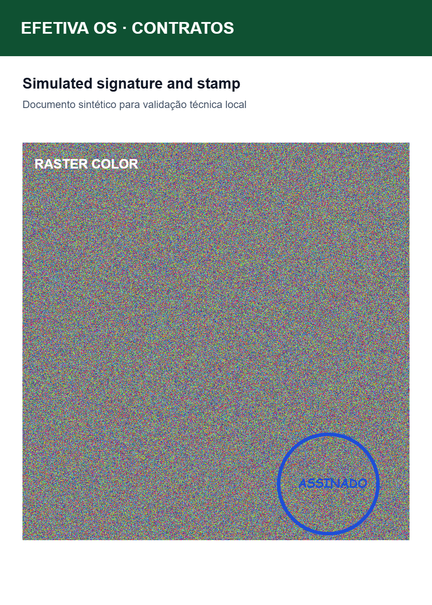
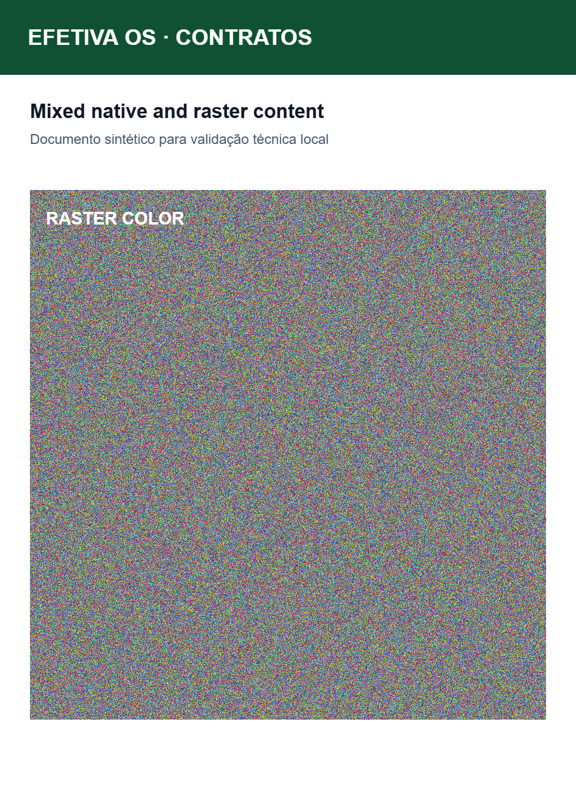

Native text and tables
Status: unchanged · original 1312 bytes · final 1312 bytes · economia 0.00% · imagens analisadas 0 · recomprimidas 0
Nenhuma imagem obteve economia segura; o original foi preservado.



Documentos sintéticos, gerados localmente. A aprovação visual humana permanece PENDING.
Status: unchanged · original 1312 bytes · final 1312 bytes · economia 0.00% · imagens analisadas 0 · recomprimidas 0
Nenhuma imagem obteve economia segura; o original foi preservado.

Status: optimized · original 1244997 bytes · final 577678 bytes · economia 53.60% · imagens analisadas 1 · recomprimidas 1



Status: optimized · original 1241094 bytes · final 538229 bytes · economia 56.63% · imagens analisadas 1 · recomprimidas 1



Status: unchanged · original 1248483 bytes · final 1248483 bytes · economia 0.00% · imagens analisadas 0 · recomprimidas 0
PDF assinado digitalmente; o original foi preservado.



Status: optimized · original 1247208 bytes · final 581967 bytes · economia 53.34% · imagens analisadas 1 · recomprimidas 1
